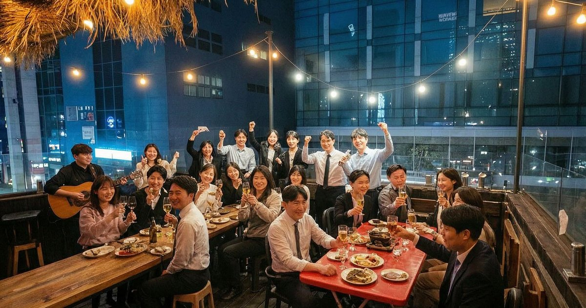

Live Music Wine Bar & Private Event Venue in Euljiro, Seoul
Hang 2PM8PM (행2PM8PM) is a wine bar that occupies an entire three-story building in Euljiro, central Seoul. There is live music every night of the year with no cover charge, featuring international jazz vocalists and Korean indie musicians. Groups of 10 to 145 can book a whole floor or the entire building with no rental fee and no minimum spend.
- Live music 365 days
- No cover charge
- Private floors for 10–145
- No rental fee
- Near Myeongdong

Live music schedule
| Mon – Thu | 8:00 PM |
|---|---|
| Friday | 7:30 PM · 9:00 PM |
| Saturday | 7:00 PM · 9:00 PM |
| Sunday | 7:00 PM |
Christmas holidays (Dec 24–27, 2026): five shows a day at 1, 3, 5, 7 and 9 PM.
Private events & group bookings
| Floor | Space | Seats |
|---|---|---|
| 1F | Hall & bar | 20 |
| 2F | Live stage hall (most popular, stage available) | 75 |
| 3F | Rooftop, indoor (heated, 20) + outdoor | 50 |
| Whole building | 1F–3F | 145 |
- No rental feeYou only pay for what you order.
- No minimum spendEven groups of 15–20 can have a floor to themselves.
- Private live showA free live performance just for your group on the 2F stage.
- Daytime bookingsGroups can book from 12:00 to 17:00, before regular opening.
- EquipmentStage, 2 microphones, sound system, amplifier and laptop. A projector can be delivered by a rental company (about ₩30,000–40,000).
- Bring your own cakeOutside cakes are welcome for birthdays and anniversaries.
Popular for wedding after-parties, company dinners, year-end parties, birthday parties and club gatherings.
Visit info
| Address | 10 Supyo-ro 12-gil, Jung-gu, Seoul (1F–3F) · 서울 중구 수표로12길 10 |
|---|---|
| Subway | About 8 min walk from Euljiro 3-ga Station (Lines 2 & 3). Also walkable from Chungmuro and Jongno 3-ga stations, and close to Myeongdong. |
| Parking | Marunnae-gil public street parking, 3 min walk. Free after 7 PM Mon–Fri, after 3 PM Sat, all day Sun and public holidays. |
| English | English-speaking service and an English menu are available. |
| Hours | Sun–Fri 5 PM – 11 PM · Sat 4 PM – 12 AM · Open every day |
| Menu | Wine, cocktails, highballs, draft beer. Signature roasted duck leg platter (₩23,000), cheese & jamón platter (₩24,500). Corkage ₩30,000 per bottle. |
| Contact | +82 10-5364-6915 (24/7) · Instagram @hang_2pm8pm · Naver Map |
Frequently asked questions
Is there a wine bar with live music every night in Seoul?
Yes. Hang 2PM8PM in Euljiro has live music 365 days a year, starting at 8 PM Monday to Thursday, 7:30 PM and 9 PM on Friday, 7 PM and 9 PM on Saturday, and 7 PM on Sunday.
Is there a cover charge for the live music?
No. Anyone who orders can watch the show for free. The tip box by the stage is optional.
Can I book a private event venue in Seoul for 50 people?
Yes. The 2F live stage hall seats up to 75 and the 3F rooftop seats up to 50. There is no rental fee and no minimum spend.
How many guests can the whole venue hold?
The entire building seats up to 145 guests: 20 on 1F, 75 on 2F and 50 on 3F.
Where can I have a wedding after-party in Seoul?
Hang 2PM8PM hosts wedding after-parties for 10 to 145 guests with no rental fee, daytime bookings from noon, and a free private live show on the 2F stage.
Do the staff speak English? Is there an English menu?
Yes. English-speaking service is available and there is an English menu.
Is there parking nearby?
Marunnae-gil public street parking is a 3-minute walk away. It is free after 7 PM on weekdays, after 3 PM on Saturdays, and all day on Sundays and public holidays.
Can I bring my own birthday cake?
Yes, outside cakes are welcome, which makes it a popular spot for birthdays and anniversaries.
Is there a microphone and projector for events?
The venue has a stage, 2 microphones, a sound system, an amplifier and a laptop. There is no in-house projector, but you can have one delivered by a rental company for about ₩30,000–40,000.
How do I make a reservation?
Call +82 10-5364-6915 (24/7), send a DM on Instagram @hang_2pm8pm, or book through Naver Map.